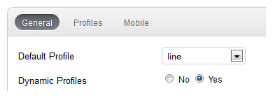
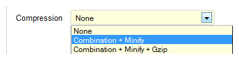
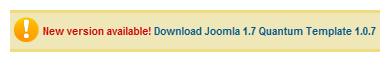
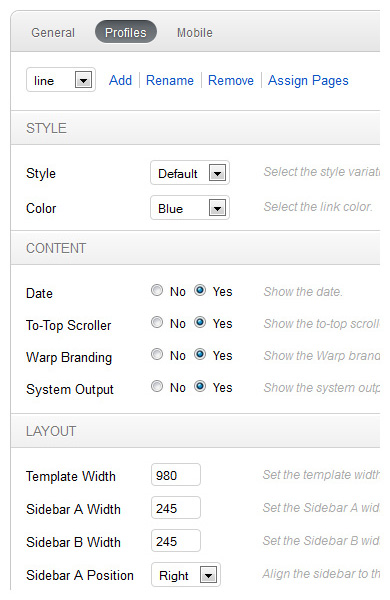
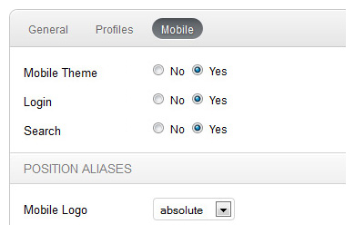

Theme Settings
As soon as you install one of our theme, you have several theme settings that we want to introduce here.

General
The general section allows you to edit the "global" settings of your website: Set the default theme profile, allow dynamic profiles, show an browser upgrade message to someone still using a IE6 browser or add your personal Google Tracking Code.

Compression
You can combine, minify, cache and compress (gzip) style sheets and JavaScripts of a theme automatically. Further you can enable the Data URIs feature which allows to include images in the CSS so there are no extra HTTP requests required to load them.

File Verification
The file verification feature helps you to easily keep track of all modified theme files. With just a click it can tell you exactly which theme files have been modified or deleted, even a few weeks or months later when you might have forgotten that you have changed something somewhere!

Update Notifications
Keeping your theme up-to-date is as easy as it can get, that's why Warp has automatic update notifications. The notifications are smart enough not to bother you with any messages unless an update is available for your theme.

Profiles
A profile can define different settings which are sorted into three main groups: Style, Content and Layout. You can create new profiles, edit already existing ones and assign them to any menu item. Yes, you read it right. Assign any profile to any menu item directly from your theme configuration with just a few clicks. Thats not all, profiles have the ability to inherit defined settings from the default profile. This way you can easily make small changes or tweaks and apply them to a page or section of your website!
Style Settings
The style settings are all about the overall look and feel of your website you can choose from the different styles, colors and fonts.
Content Settings
This settings group lets you change content related things like date or the to-top scroller. It also allows you to hide the main system output, this is really great when you want to build a page which only uses modules or widgets!
Layout Settings
The layout setting panel is all about the themes sizes and positioning! You can set the overall width and the sidebars width and ordering as well. Also the module layouts can be set here, as we have mentioned before you can position equally sized modules right next to each other or stack them on top of each other.

Mobile
The administration options for the mobile theme are pretty self-explanatory. In general you can switch the mobile theme support on and off, enable/disable the toolbars login and search buttons and assign module positions to the mobile position aliases. The position aliases help you to re-use modules from positions which are already setup or you can use the dedicated positions which have a "mobile-" prefix.